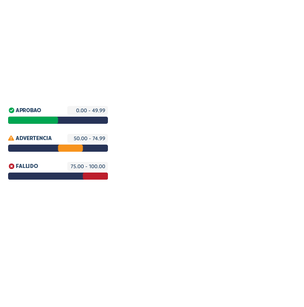
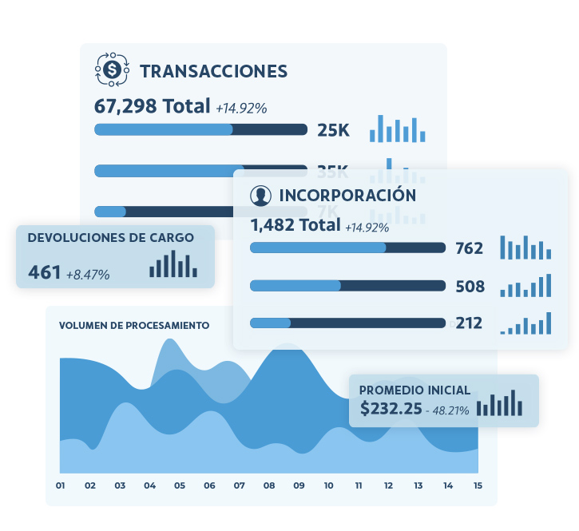

Inglés
Inglés Portugués
PortuguésOptimizar Riesgo
Inteligencia para garantizar la mejor defensa contra el fraude sin comprometer las conversiones.
Estimulación de la Regla de Riesgo
Nuestro equipo de expertos en riesgos dedicados colaborará con usted para generar informes basados en datos sobre el rendimiento de las reglas de riesgo sobre los compromisos de sus clientes. Estos informes le permitirán probar y optimizar las configuraciones de riesgo y mejorar la eficacia de su estrategia de prevención del fraude.
Personalizar Para Regiones de Mercado
Mitigar los riesgos de fraude en diversos mercados y regiones exige un enfoque matizado. Nuestros conocimientos basados en datos generan informes de análisis de riesgo personalizados que le permiten adaptar las reglas del motor de riesgo y las acciones del sistema a su apetito por el riesgo.





Entrada al Mercado
Prevenga el fraude antes de la entrada al mercado para garantizar la mejor expansión posible.
Estar Protegido
Ingresar a una nueva región de mercado es un esfuerzo de alto riesgo, particularmente en el espacio digital. Con informes basados en datos e información crítica sobre los riesgos de fraude únicos presentes en su nuevo mercado, puede adaptar sus estrategias para mitigar de manera efectiva los riesgos en la entrada inicial al mercado, protegiendo su negocio y generando confianza en el cliente.
Pruebe Nuestra Protección
Nuestros expertos en riesgos colaborarán con gusto con usted y establecerán informes de simulación de las capacidades de nuestra plataforma antes de la expansión o integración.
CONTÁCTENOS
Informes Granulares
Los informes personalizados brindan información personalizada que puede transformar su negocio.
Al analizar datos específicos de sus operaciones únicas, puede identificar tendencias, optimizar procesos y tomar decisiones más informadas para establecer una ventaja competitiva, mejorar el rendimiento e impulsar el crecimiento.
- Reportes Transaccionales y de Registro
- Informes de Volumen, Depurador y Base de Datos
- Crear Informes de Varias Capas
- Notificaciones, Agentes e Informes de Revisión de Fraude
Obtener una Demostración
